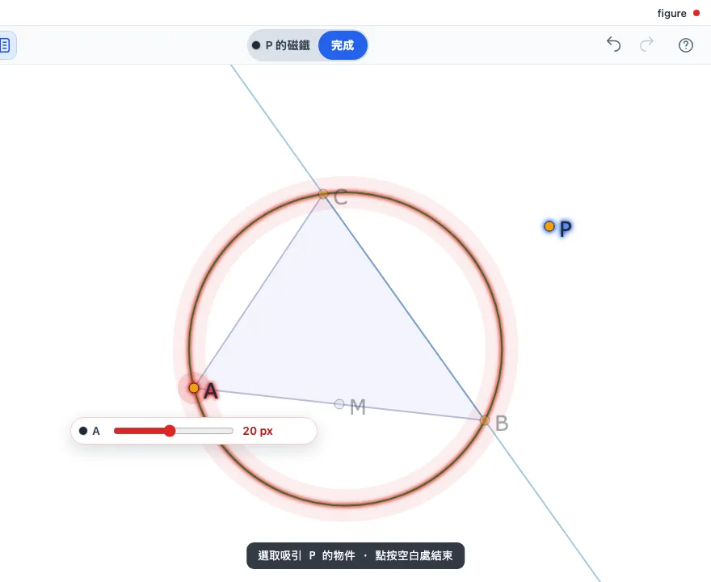

磁鐵、圖釘和彈簧
磁鐵
帶磁性的自由點被拖曳到所選物件附近時會吸附在上面，但並不與它們綁定。

- 選取自由點，然後點 磁鐵。圖形的其餘部分被蒙上一層遮罩。
- 點按每個發揮吸引作用的物件（點、直線、圓、圓錐曲線、曲線、列表）：它變為紅色，初始吸引範圍為 20 px。該點本身及其依賴物件不能選取。
- 用所選磁鐵卡片上的滑桿調整吸引範圍：無（移除該磁鐵）、1 到 1000 px、任意位置。每個磁鐵的吸引區域以淺紅色顯示。
- 點按空白處、完成或 Esc 結束。
調整時可以拖曳該點進行試驗。每次調整都是一個復原步驟。
圖釘
固定在螢幕上（自由點，平面圖形）：縮放或平移檢視時，該點保持在視窗中的位置，而不是保持其座標。它仍可移動。再按一次：取消固定。
彈簧
動畫（直線、線段、射線、圓、圓弧、多邊形、圓錐曲線或軌跡上的點，或滑桿）會在點下方（或滑桿的滑鈕下方）伸出一根末端帶球的彈簧。
- 拉動小球再放開即可讓物件移動；拉動時，點或滑鈕的虛影已顯示移動情形。
- 長度：速度，按顯示的檔位（直線、多邊形或圓錐曲線上為 px/s；圓上為 °/s；軌跡或滑桿上為 %）。
- 方向：物件朝拉動的反方向移動：向左拉（直立的滑桿則向下拉）滑桿，其值增大。
- 相對於直線或滑桿橫向拉（超過 45°）：來回移動。否則物件循環移動。
- 低於第一檔：停止。
對已在移動的物件，彈簧伸出時已按目前速度拉緊。再按一次：收起彈簧。精確速度、反向、到達端點時停止：見屬性中的動畫部分。